Set up Your Raspberry Pi
If You Have a Screen
If you have a screen, it will be easy for you to operate on the Raspberry Pi.
Required Components
Any Raspberry Pi
1 * Power Adapter
1 * Micro SD card
1 * Screen Power Adapter
1 * HDMI cable
1 * Screen
1 * Mouse
1 * Keyboard
Insert the SD card you’ve set up with Raspberry Pi OS into the micro SD card slot on the underside of your Raspberry Pi.
Plug in the Mouse and Keyboard.
Connect the screen to Raspberry Pi’s HDMI port and make sure your screen is plugged into a wall socket and switched on.
Use the power adapter to power the Raspberry Pi. After a few seconds, the Raspberry Pi OS desktop will be displayed.
Warning
If you use a Raspberry Pi 4, you need to connect the screen to the HDMI0 (nearest the power in port).
If You Have No Screen
If you don’t have a monitor, you can remotely log into your Raspberry Pi.
You can apply the SSH command to open the Raspberry Pi’s Bash shell. Bash is the standard default shell for Linux. The shell itself is a command (instruction) when the user uses Unix/Linux. Most of what you need to do can be done through the shell.
If you’re not satisfied with using the command window to access your Raspberry Pi, you can also use the remote desktop feature to easily manage files on your Raspberry Pi using a GUI.
See below for detailed tutorials for each system.
Windows
If you’re a Windows user, you can use Windows PowerShell to login Raspberry Pi remotely.
Press the windows + R shortcut key in your keyboard to open the Run program. Then type powershell in the input box.
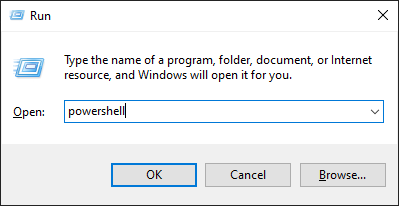Check if your Raspberry Pi is on the same network by type in
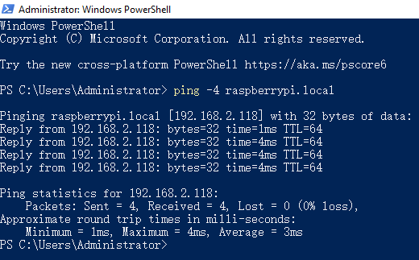ping <hostname>.local
If terminal prompts Ping request could not find host <hostname>.local, it is possible that the Raspberry Pi failed to connect to the network. Please check the network.
If you really can’t ping <hostname>.local, try to Get the IP address and ping <IP address> instead. (e.g., ping 192.168.2.118)
If multiple prompts like “Reply from <IP address>: bytes=32 time<1ms TTL=64” appear, it means your computer can access the Raspberry Pi.
Type in ssh <username>@<hostname>.local (or ssh <username>@<IP address>).
The following message may appear.
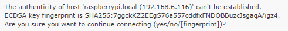Input “yes”.
Input the password you set before. (Mine is raspberry.)
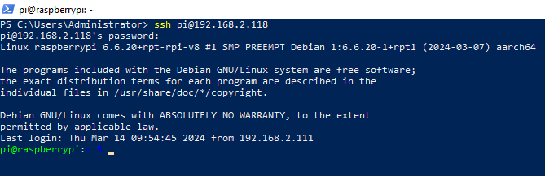Warning
When you input the password, the characters do not display on window accordingly, which is normal. What you need is to input the correct password.
Remote Desktop
If you’re not satisfied with using the command window to access your Raspberry Pi, you can also use the remote desktop feature to easily manage files on your Raspberry Pi using a GUI.
Here we use VNC® Viewer.
Enable VNC service
The VNC service has been installed in the system. By default, VNC is disabled. You need to enable it in config.
Input the following command:
sudo raspi-config
Choose 3 Interfacing Options by press the down arrow key on your keyboard, then press the Enter key.
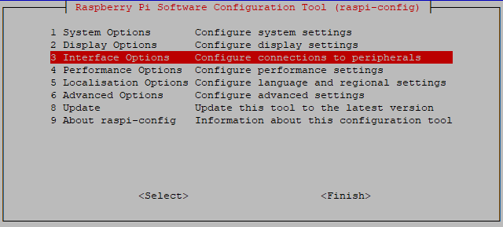Then P3 VNC.
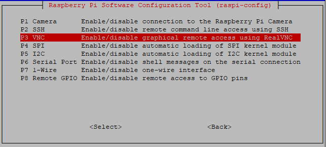Use the arrow keys on the keyboard to select <Yes> -> <OK> -> <Finish> to complete the setup.
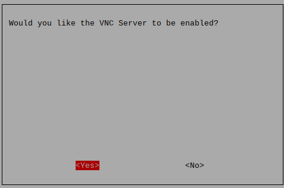
Login to VNC
You need to download and install the VNC Viewer on personal computer.
Open it once the installation is complete. Then, enter the host name or IP address and press Enter.
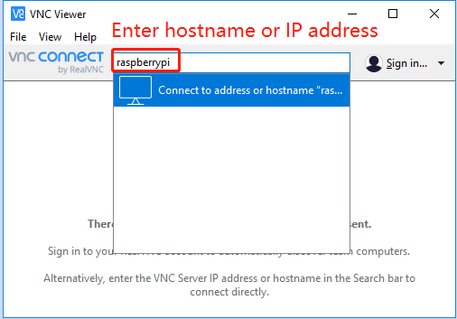After entering your Raspberry Pi name and password, click OK.

Now you can see the desktop of the Raspberry Pi.
MacOS
Open the terminal and type following command. If this command doesn’t work, please move to next page.
ssh pi@raspberrypi.local
If you do not change the password during system installation, the default password is raspberry,case sensitive.
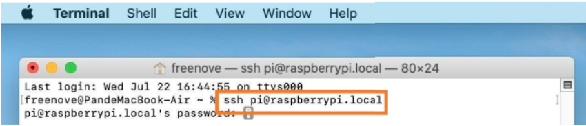You may need to type yes during the process.
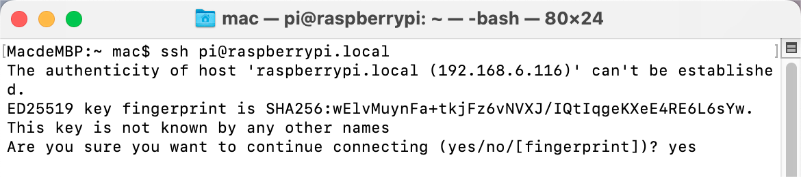 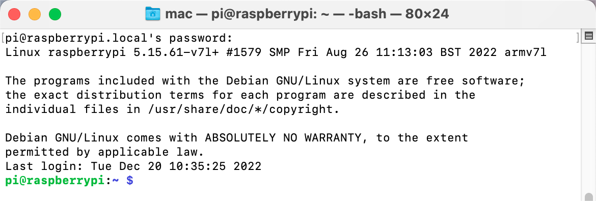You can also use “ping-4 raspberry.local” to find the IP address of the raspberry PI.
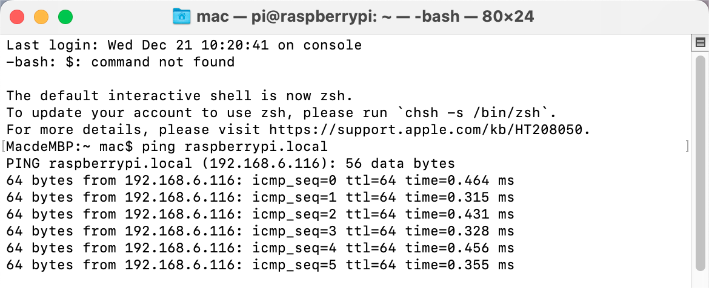Open the terminal and type following command.
ssh pi@rpi ip address
When you see “pi@raspberrypi:~ $”, you have logged in Pi successfully. Then you can skip to next section.
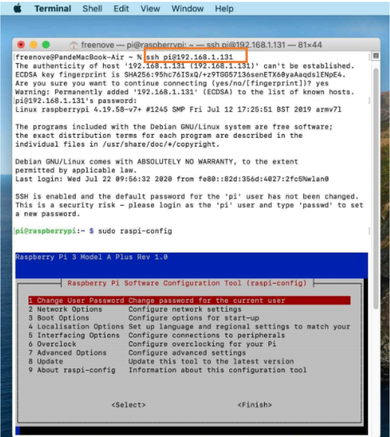Login to VNC
You need to download and install the VNC Viewer on personal computer.
Open it once the installation is complete. Then, enter the host name or IP address and press Enter.
After entering your Raspberry Pi name and password, click OK.
Now you can see the desktop of the Raspberry Pi.